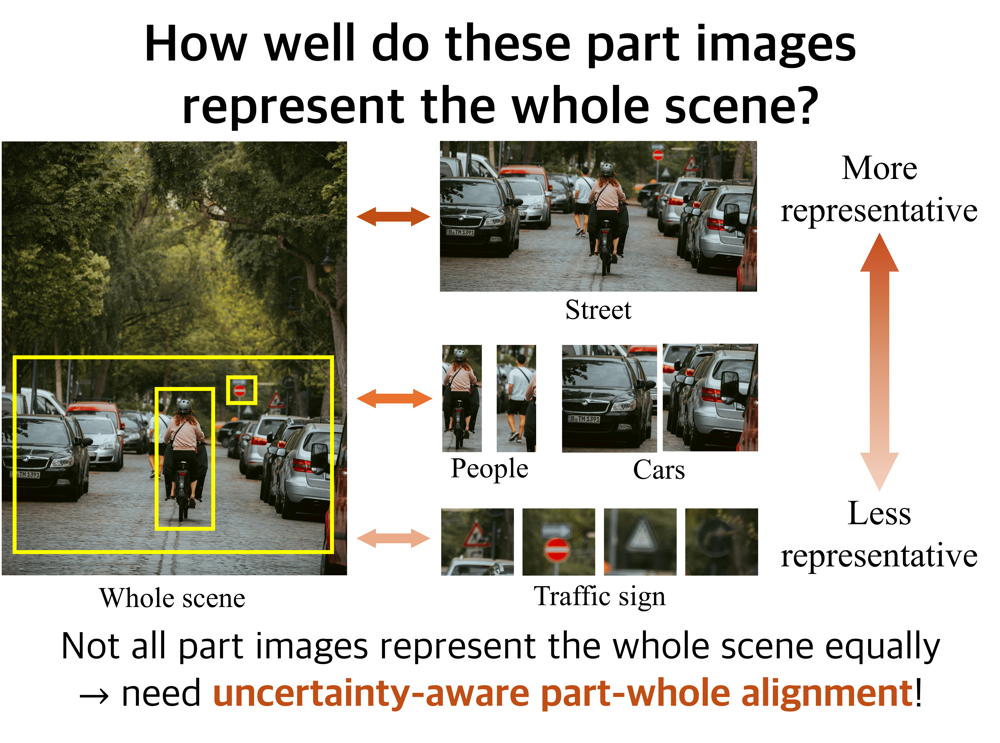

Hi! 👋 I'm Ji Ha Jang. I'm currently pursuing an integrated PhD course in Electrical and Computer Engineering (ECE) at Seoul National University (SNU), advised by Prof. Se Young Chun. I earned my B.S. degree in ECE at Seoul National University.
Research Keywords Multimodal AI Generative AI Commonsense AI
I'm interested in multimodal, generative, commonsense AI, and low-level computer vision. My work is driven by a deep curiosity about how AI can better understand and interact with the complexities of the world, combining various modalities. Highlighted papers are representative works.

We propose UNCHA for enhancing hyperbolic VLMs. UNCHA models part-to-whole semantic representativeness with hyperbolic uncertainty, assigning lower uncertainty to more representative parts and higher uncertainty to less representative ones. UNCHA achieves state-of-the-art performance on zero-shot classification, retrieval, and multi-label classification benchmarks.
We propose RoMaP, a novel framework for local 3D Gaussian editing that enables precise and flexible part-level modifications. RoMaP introduces a geometry-aware 3D mask prediction module and a regularized SDS loss to constrain edits to target regions while preserving context.
We present INTRA, a novel framework for affordance grounding which enables training without egocentric images, grounds different parts for different interactions on the same object, and enables free-form text input.
We propose PODIA-3D, a novel pipeline that uses pose-preserved text-to-image diffusion-based domain adaptation for 3D generative models.